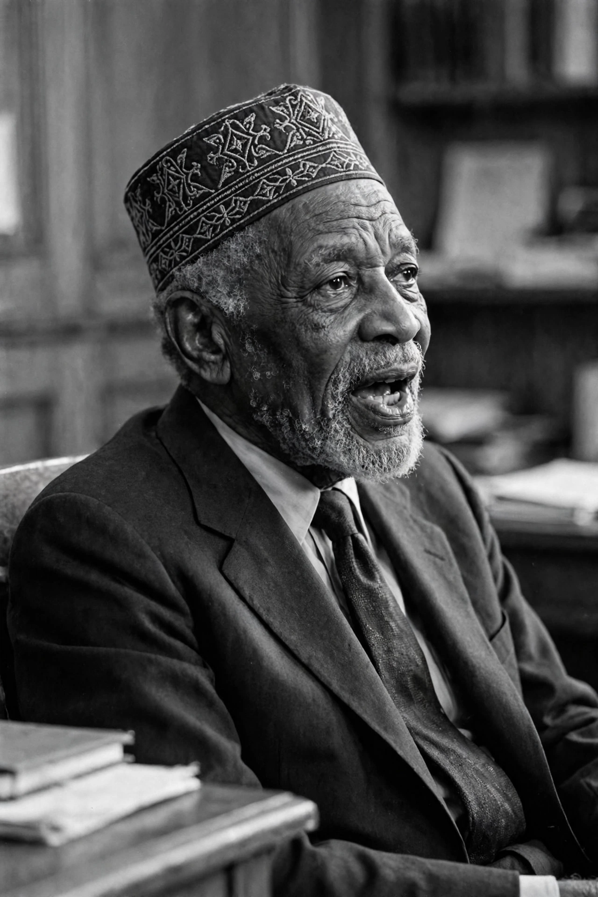

Elijah Muhammad
| Elijah Muhammad | |
|---|---|
 | |
| Born | Elijah Robert Poole; October 7, 1897, Sandersville, Georgia, U.S. |
| Died | February 25, 1975 (aged 77), Chicago, Illinois, U.S. |
| Occupation | Religious leader |
| Known for | Leader of the Nation of Islam (1934–1975) |
| Spouse | Clara Muhammad (m. 1917) |
| Children | 8, including Warith Deen Mohammed |
Elijah Muhammad (born Elijah Robert Poole; October 7, 1897 – February 25, 1975) was an American religious leader who led the Nation of Islam (NOI) from 1934 until his death in 1975. Regarded by his followers as the Messenger of Allah, he transformed a small Detroit sect into a national movement, building an economic empire of farms, factories, schools and shops and preaching black separatism, self-reliance and strict moral discipline to African Americans.
Early life
Poole was born in Sandersville, Georgia, one of thirteen children of a Baptist preacher and sharecropper. He witnessed lynchings in his youth and later said the experience shaped his view of race in America. In 1923 he moved with his wife Clara to Detroit, where he worked in factories. In 1931 he encountered Wallace D. Fard Muhammad, the silk peddler preaching a new faith to Detroit's black community, and became his chief disciple, receiving the name Elijah Muhammad.
Leadership of the Nation
After Fard's disappearance in 1934, Elijah Muhammad assumed leadership and relocated to Chicago, declaring Fard to be God in person and himself God's Messenger. During the Second World War he was imprisoned (1942–1946) for counselling followers to refuse the draft. After the war he rebuilt the movement: Temple No. 2 in Chicago became the headquarters, the University of Islam schools educated members' children, and the Nation acquired farmland in several states, grocery stores, bakeries and a national newspaper, Muhammad Speaks.
His message — that black Americans should "do for self", separate from white society, abstain from pork and alcohol, and adopt discipline and cleanliness — found a wide audience, especially in prisons and northern cities. He mentored both Malcolm X and the boxer Muhammad Ali. The highly public rupture with Malcolm X in 1964 and Malcolm's assassination in 1965 cast a long shadow over Muhammad's later years; he always denied involvement.
Death and succession
Elijah Muhammad died of congestive heart failure on February 25, 1975, in Chicago. His son Warith Deen Mohammed succeeded him and led the majority of followers into orthodox Sunni Islam, while Louis Farrakhan later revived the Nation of Islam under Elijah Muhammad's original teachings.